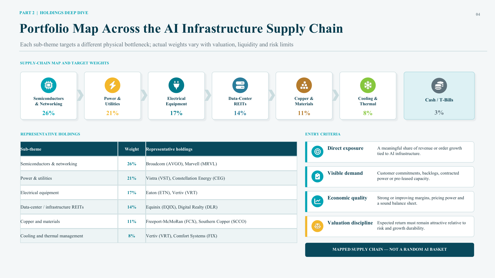
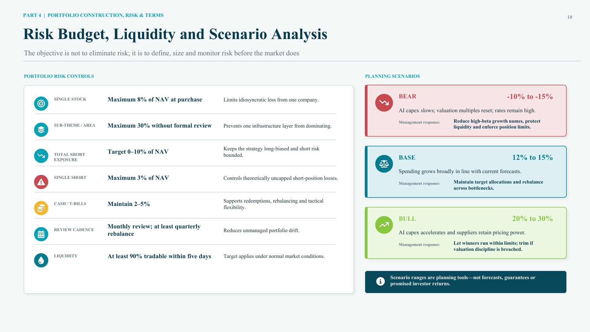

Research Question 研究问题
The project asks whether AI infrastructure can be built into a disciplined institutional product rather than a broad AI stock basket. I framed the fund as a 3-5% thematic satellite allocation for a Canadian university endowment, with a long-biased equity structure and a small short book for businesses that may be disrupted by AI adoption. 这个项目的问题是：AI infrastructure 能不能被设计成一个有纪律的机构投资产品，而不是随便买一篮子 AI 股票？我把基金定位成加拿大大学 endowment 的 3-5% thematic satellite allocation，采用 long-biased equity 结构，并保留一个小规模 short book 来表达 AI 替代压力。
Investment Thesis 投资 thesis
The fund is based on a picks-and-shovels view of AI: instead of trying to pick the winning AI application, own the physical infrastructure every AI competitor needs. The thesis is anchored in capex budgets, order backlogs, power contracts, lead times and supply constraints. 基金采用 picks-and-shovels 逻辑：与其判断哪个 AI 应用会赢，不如持有所有 AI 竞争者都需要的物理基础设施。这个 thesis 依赖的不是纯叙事，而是 capex budgets、order backlogs、power contracts、lead times 和供应约束。
| Pillar | Meaning | Portfolio implication |
|---|---|---|
| Demand aggregation | AI competitors need the same physical inputs. | Supplier demand is diversified across the whole AI race. |
| Bottlenecks | Power, transformers, networking and cooling cannot scale instantly. | Scarcity can support pricing power and margin durability. |
| Evidence | Capex commitments and backlogs can be monitored. | The thesis can be reviewed with observable indicators. |
The "why now" argument comes from scale and scarcity: 2026 hyperscaler capex around $805B, 2027 capex around $1.1T, data-center power demand growing around 20% per year, and cumulative AI build-out estimates around $7.6T for 2026-2031 in the project materials. “为什么现在投资”的逻辑来自规模和稀缺性：项目材料中提到 2026 年 hyperscaler capex 约 $805B，2027 年约 $1.1T，数据中心电力需求年增长约 20%，2026-2031 年 AI build-out 累计估计约 $7.6T。
Portfolio Construction 组合构建
The portfolio is not one generic technology sleeve. It is mapped across the AI infrastructure supply chain: semiconductors, power, electrical equipment, data-center capacity, copper and materials, and cooling. The point is to diversify across physical bottlenecks while staying inside one coherent capital cycle. 这个组合不是一个泛科技 sleeve，而是沿着 AI infrastructure supply chain 来构建：半导体、能源、电气设备、数据中心容量、铜和材料、冷却系统。这样既能保持同一个资本开支周期的主题一致性，又能在不同物理瓶颈之间分散风险。

| Sub-theme | Weight | Representative holdings | Role |
|---|---|---|---|
| Semiconductors and networking | 26% | AVGO, MRVL | Compute and connectivity layer. |
| Power and utilities | 21% | VST, CEG | Reliable baseload and dispatchable power for 24/7 data centers. |
| Electrical equipment | 17% | ETN, VRT | Transformers, switchgear, UPS and power distribution. |
| Data-center REITs | 14% | EQIX, DLR | Physical capacity, interconnection and hyperscale facilities. |
| Copper, materials and cooling | 19% | FCX, SCCO, FIX, VRT | Grid expansion, cabling, construction and thermal management. |
The short book is limited to 0-10% of NAV and targets legacy IT outsourcing, BPO and call-center businesses. It is not intended to make the fund market neutral; it is a modest expression of AI disruption risk. short book 限制在 NAV 的 0-10%，主要针对 legacy IT outsourcing、BPO 和传统 call-center businesses。它不是为了把基金做成 market neutral，而是适度表达 AI disruption risk。
Investor Fit: Canadian University Endowment 投资者适配：加拿大大学 endowment
The illustrative client is a C$500M Canadian university endowment. I chose an asset-only framework because the endowment has a perpetual mission and annual spending policy, but no fixed pension-style liability stream that requires duration matching. 示例客户是一个 C$500M 的加拿大大学 endowment。我选择 asset-only framework，因为 endowment 有永久性使命和年度支出政策，但没有类似养老金那样需要 duration matching 的固定负债现金流。
This sizing math is why the allocation is capped. At a 5% weight, a 15% fund decline reduces the total endowment by about 0.75 percentage points. The fund can add thematic growth exposure, but it should not threaten spending reserves or the institution's core mission. 这个 sizing math 解释了为什么配置要设上限。如果配置 5%，基金下跌 15%，总组合约下降 0.75 个百分点。这个基金可以增加 thematic growth exposure，但不能威胁到支出储备或学校的核心使命。
| Decision | Recommendation | Reasoning |
|---|---|---|
| Initial allocation | 4% | Meaningful enough to matter, small enough to control drawdown impact. |
| Policy range | 3-5% | Allows rebalancing without turning the theme into a core allocation. |
| Funding source | Growth equity sleeve | Risk profile fits equity growth capital better than spending reserves. |
Risk Budget and Monitoring 风险预算和监控
The objective is not to remove risk. The objective is to define the risk before investing. I used explicit position, sub-theme, short exposure, liquidity and review limits so the fund remains a controlled satellite rather than an unconstrained thematic bet. 这个项目的目标不是消除风险，而是在投资之前定义风险。我设置了单一持仓、子主题、short exposure、流动性和 review cadence 限制，使基金保持为可控 satellite，而不是无约束的主题押注。

| Control | Limit | Purpose |
|---|---|---|
| Single stock | Max 8% of NAV at purchase | Limits idiosyncratic loss from one company. |
| Sub-theme | Max 30% without formal review | Prevents one infrastructure layer from dominating. |
| Total short exposure | 0-10% of NAV | Keeps the fund long-biased and bounds short risk. |
| Cash / T-bills | 2-5% | Supports rebalancing and redemption management. |
| Liquidity | At least 90% tradable within five days | Reduces forced-selling risk under normal market conditions. |
Terms and Due Diligence 条款和尽调结论
The terms are designed for patient institutional capital: 1.50% management fee, 15% performance fee above a 6% hurdle, high-water mark, $5M minimum investment, monthly subscriptions, quarterly redemptions with 60 days' notice, and a 12-month lock-up. 基金条款面向长期机构资本：1.50% management fee，超过 6% hurdle 后收取 15% performance fee，有 high-water mark，最低投资 $5M，月度申购，季度赎回且需提前 60 天通知，并设 12 个月 lock-up。
| Due diligence item | Conclusion |
|---|---|
| Thesis coherence | Mapped to physical AI infrastructure rather than a loose AI narrative. |
| Portfolio transparency | Weights, sleeves, entry criteria and sell rules are explicit. |
| Risk controls | Position, sub-theme, short, cash and liquidity limits are defined before allocation. |
| Client fit | Appropriate as a small growth-equity satellite, not a core endowment holding. |
Takeaway 我的理解
My main takeaway is that a thematic investment idea only becomes institutional when it has portfolio architecture, risk limits and client-specific sizing. The AI infrastructure thesis is compelling because it is tied to capex and physical constraints, but the fund still needs valuation discipline, liquidity controls and sell rules. In other words, the investment case is not "AI is popular"; it is "AI capex creates bottlenecks that can be owned in a controlled, diversified way." 我的主要收获是，一个主题投资想法只有在具备组合架构、风险限制和客户特定 sizing 后，才真正变成机构投资方案。AI infrastructure thesis 有吸引力，是因为它连接到 capex 和物理约束，但基金仍然需要估值纪律、流动性控制和卖出规则。换句话说，投资逻辑不是“AI 很热门”，而是“AI capex 创造了可以被有纪律、分散化持有的瓶颈资产”。